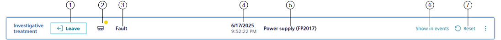

Investigative Treatment
When you start investigating the system, the screen displays the System workspace with the Investigative treatment bar along the top, and the object that caused the event already selected in System Browser.
For instructions, see Handling an Event with Investigative Treatment.
Investigative treatment bar

1 | Allows interrupting investigative treatment. | |
2 | Graphic representation of the event by discipline and category. | |
3 | Indicates the event cause. | |
4 | Indicates date and time when the event occurred. | |
5 | Indicates the event source. | |
6 | Allows switching back to Event List without interrupting the investigative treatment currently in progress. | |
7 | Command | Notes |
Acknowledge | Available when event state is unprocessed = | |
Reset | Available when event state is ready to be reset = | |
Silence | Available only where these commands have been configured for the field panel and event status is one of the following:
| |
Unsilence | ||
Close | Available only for events that can be manually closed, and event state is:
| |
You can directly select the button to send the corresponding command. If no command is available in the Investigative treatment bar, you can use to view the list of commands in a popup; text in light gray indicates that those commands are unavailable because they were already issued or they cannot yet be issued. NOTE: In Fire profiles only, if no other command is available, also Silence/Unsilence is visible but unavailable. | ||